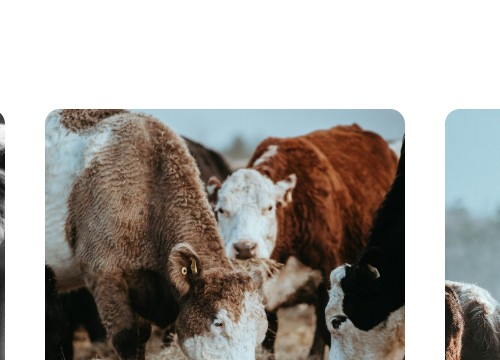
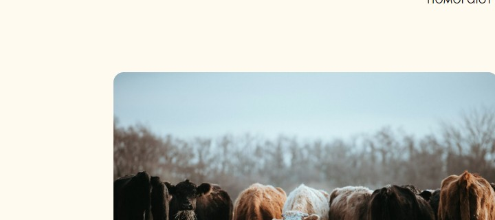

✓
Работающие лаборатории под ключ
От проектирования, строительства и поставки оборудования до обучения персонала и поставки расходных материалов
Лаборатории под ключ для получения эмбрионов in vitro
OPULABС нашими лабораториями под ключ для работы с эмбрионами КРС и МРС in vitro вы можете значительно повысить производительность своего стада за короткий срок. Мы предлагаем комплексное решение для оптимизации вашей селекционной программы которое значительно быстрее традиционных методов.
Подробнее о технологииОт проектирования, строительства и поставки оборудования до обучения персонала и поставки расходных материалов
Наши эксперты помогут вам сделать вашу лабораторию максимально эффективной
У нас есть примеры успешной реализации проектов в крупных хозяйствах
Технология in vitro эмбриотрансфера, известная также как перенос эмбрионов, представляет собой метод, направленный на повышение качества и количества потомства у сельскохозяйственных животных.
Процесс включает в себя забор яйцеклеток у высокопродуктивных самок, их последующее оплодотворение в лабораторных условиях спермой от лучших самцов. Затем оплодотворённые яйцеклетки, или эмбрионы, несколько дней выращиваются в специальной среде. После этого здоровые эмбрионы переносятся в матку суррогатных матерей, которые вынашивают потомство. Этот метод способствует быстрому распространению ценных генетических признаков среди животных.
Мы предлагаем передовые технологии, которые позволяют получить эмбрионы с высокими показателями, что гарантирует быстрый рост и развитие вашего поголовья. Лаборатория оснащена оборудованием из России, Бразилии и Китая, что обеспечивает надёжность и эффективность процессов.
Технология позволяет повысить продуктивность поголовья до 50% в короткие сроки за счет получения большого количества потомства от высокоценных животных
Использование технологии позволяет быстро проводить селекцию по необходимым признакам, что способствует улучшению качества поголовья
Увеличение прибыли за счет повышения продуктивности, улучшения показателей здоровья, повышения продуктивного долголетия
Повышение продуктивности стада и продажа элитного генетического материала
Увеличение эффективности производства и получение лучших результатов в конкурентной среде
Средний срок окупаемости проекта — 2-3 года
Все, что нужно для создания надежного и безопасного пространства
От проектирования до запуска и поддержки
Использование только проверенного оборудования и материалов
Решения, адаптированные под конкретные задачи заказчика
Успешная оптимизация воспроизводства в крупных хозяйствах, повышение генетического потенциала стада
Оборудование для in vitro осеменения скота, которое позволяет повысить эффективность стада на 50%.
По запросу
Покупайте прямо сейчас
Программа обучения для специалистов, работающих с оборудованием для in vitro осеменения.
От 10 000 ₽
Покупайте прямо сейчасПолный набор расходных материалов для бесперебойной работы лаборатории in vitro осеменения.
По запросу
Покупайте прямо сейчасТехнология in vitro позволяет ускорить процесс селекции и повысить эффективность стада на 50% в короткие сроки. Наша лаборатория оснащена оборудованием из России, Бразилии и Китая, что обеспечивает высокую производительность и качество работы. Мы обучаем персонал для работы на этом оборудовании и поставляем все необходимые расходные материалы. Экономический эффект от использования наших услуг включает снижение затрат на закупку племенного скота и повышение продуктивности хозяйства.
Посмотрите успешные примеры лабораторий под ключ, которые повышают эффективность стада и прибыльность. Убедитесь, как наши решения помогают животноводам.

Реальные примеры успешной реализации лабораторий показывают значительное повышение эффективности стада благодаря использованию передовых технологий in vitro осеменения.
Наши специалисты предоставляют комплексное обучение для персонала лабораторий, что позволяет эффективно использовать оборудование и методики.
Обеспечение лабораторий высококачественными расходными материалами от надёжных поставщиков гарантирует точность и эффективность процессов in vitro осеменения.
Внедрение наших технологий не только повышает прибыльность через увеличение эффективности стада, но и способствует устойчивому развитию сельского хозяйства.
Отправляя заявку, вы соглашаетесь с политикой конфиденциальности.